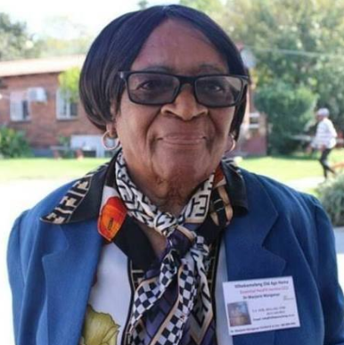
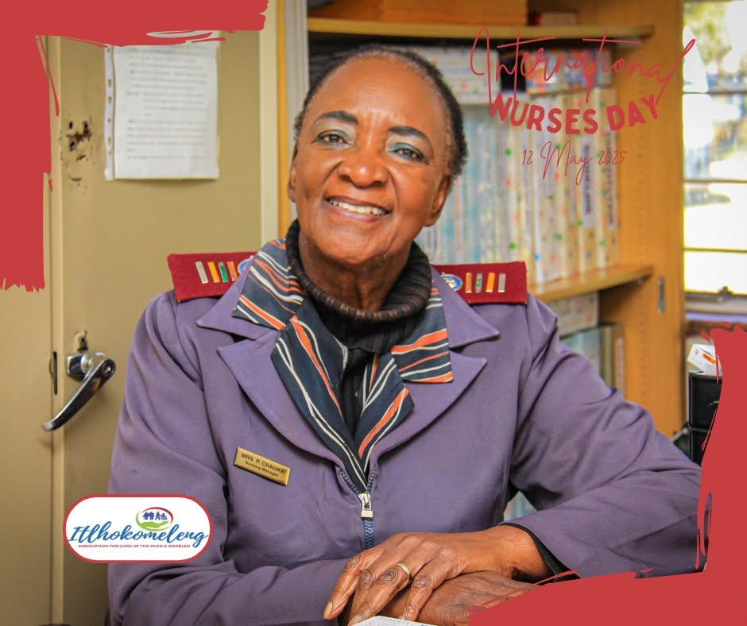

Dr Marjorie Manganye
Founder: oversees programmes and community partnerships. Dr Marjorie was honoured by Wits University for being "mother Theresa of Alexandra" in 2017. She is currently 93 years old.
Itlhokomeleng Association for Aged & Disabled is a community-based non-profit organisation that supports older persons and persons with disabilities. We provide home-based care, social support, and advocacy to help people live with dignity and inclusion in their communities. It was founded by the enigmatic Marjorie Manganye, who at 93 is still the head lady in charge and as sprightly as ever, and known as “The Mother Theresa of Alex”
To provide compassionate care, dignity, support and meaningful assistance to elderly and Disabled people while contributing positively to the Alexandra community.
To create a caring and supportive community where elderly and disabled people are respected, protected and able to live with dignity.

Founder: oversees programmes and community partnerships. Dr Marjorie was honoured by Wits University for being "mother Theresa of Alexandra" in 2017. She is currently 93 years old.

Nursing manager and long-standing board member (since 1996) and retired nurse..